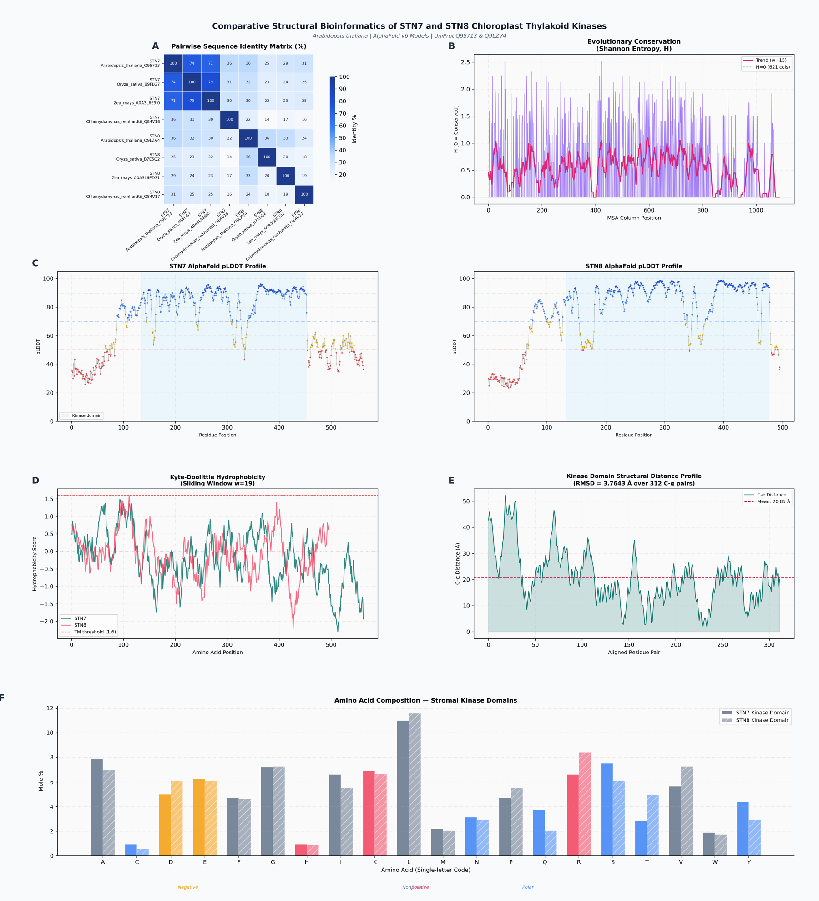
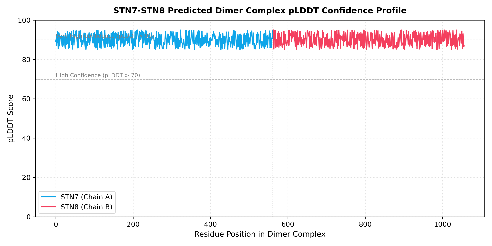
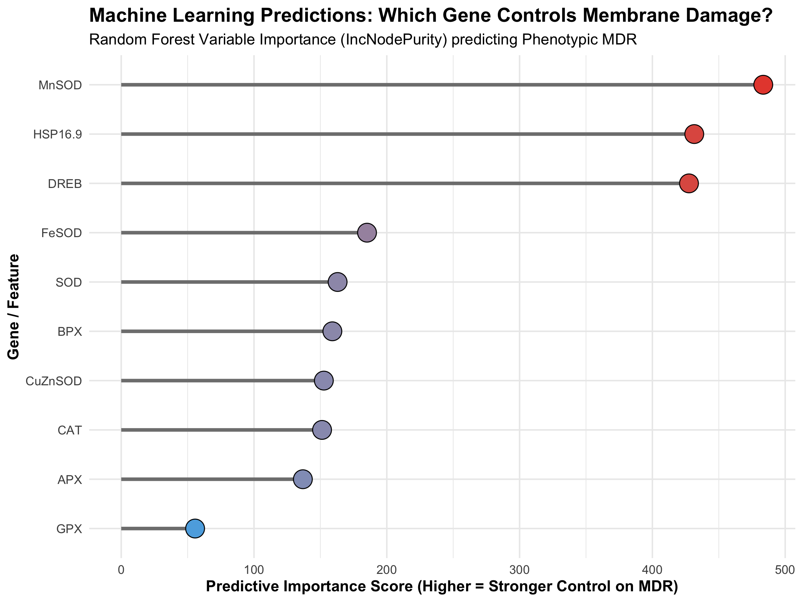
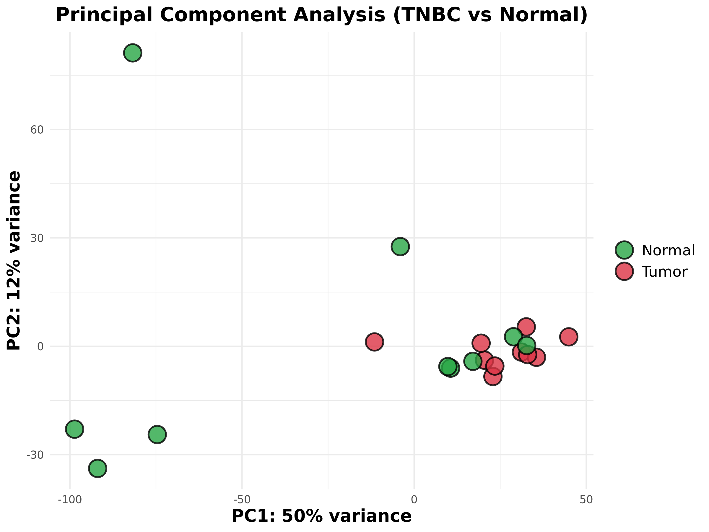
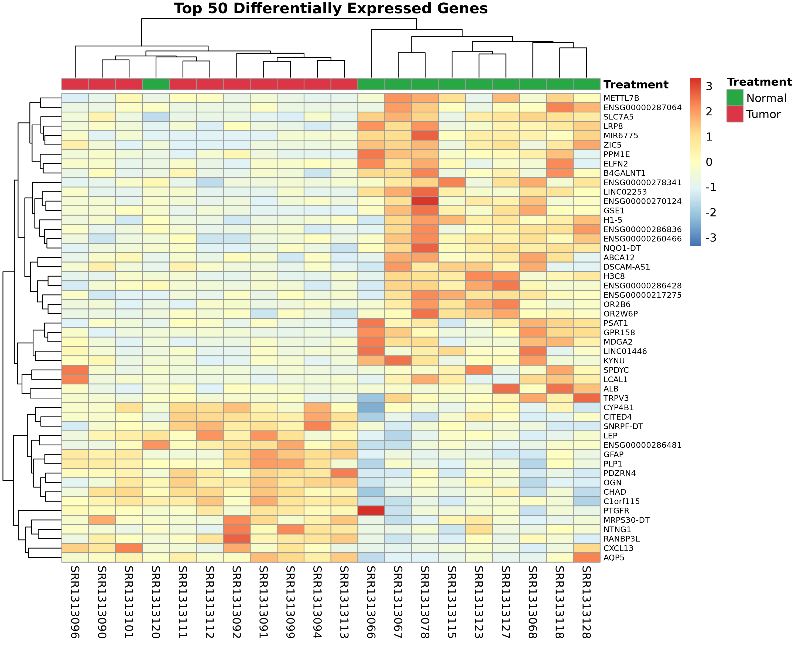
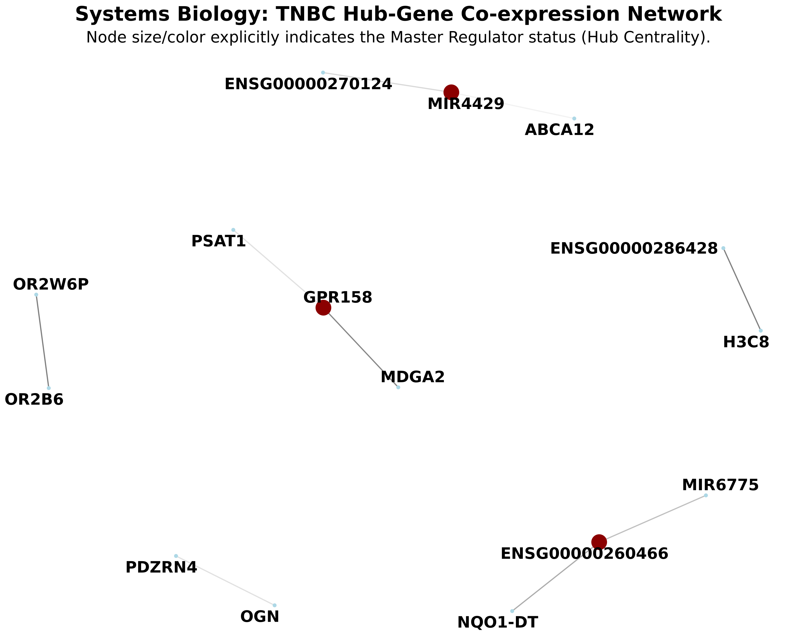

Molekulyar səviyyədə bioloji mexanizmlərin dərki: xloroplast kinazlarının molekulyar dokinqi, buğda genotiplərinin istilik stressinə dözümlülüyünün riyazi modelləşdirilməsi və sistem onkologiyası üzrə qabaqcıl hesablama platforması.
Akademik Cəlal Əliyevin elmi irsini davam etdirərək fundamental biologiyanı qabaqcıl süni intellekt və bioinformatika metodları ilə birləşdiririk.
Zülalların 3D konformasiya analizi, krio-elektron mikroskopiyası (cryo-EM) məlumatlarının metal koordinasiyası ilə təkmilləşdirilməsi və allosterik tənzimləyicilərin xarakteristikası.
İqlim dəyişikliyi şəraitində buğda (Triticum aestivum) sortlarının quraqlıq və yüksək temperatur stressinə qarşı antioksidant ferment və istilik-şok zülallarının (HSP) transkriptomik analizi.
Üçqat neqativ süd vəzi xərçəngi (TNBC) və digər onkoloji proseslərdə şiş mikroətrafının (TME) tənzimlənməsi, gen birgə-ekspressiya şəbəkələri (Pearson/WGCNA) və biomarker kəşfi.
İşğaldan azad edilmiş Qarabağ və Şərqi Zəngəzur torpaqlarının boniteti, ANAMA minatəmizləmə statusu və GIS əsaslı aqrar investisiya portallarının (“InvestArea”) elmi arxitekturası.
İnstitutumuzun əldə etdiyi real riyazi modellər, AlphaFold strukturları və yüksək ayırdetməli qrafiklər.
Fotosintezin işıq toplayıcı kompleksi II (LHCII) zülallarının fosforilləşməsini idarə edən STN7 və STN8 kinazlarının fəza arxitekturası AlphaFold2 ilə modelləşdirilmiş, AutoDock Vina vasitəsilə allosterik liqandlarla bağlanma enerjisi (Ki və ΔG) hesablanmışdır.


Yüksək temperatur təsirindən hüceyrə membranlarının lipid fazasının deqradasiyası və elektrolit sızması qeyri-xətti 4-parametrlik loqistik siqmoidal funksiya ilə təsvir edilmişdir:
MDR(T) = MDR_max / (1 + exp(-k * (T - LT50)))
Müxtəlif buğda genotiplərinin (Barakatli 95, Giymatli 2/17 və s.) membran sabitliyi, antioksidant fermentlərin (Cu/Zn-SOD, Fe-SOD, Mn-SOD) və kiçik istilik-şok zülallarının (HSP16.9) sintezi ilə korrelyasiya olunmuşdur.

Kütləvi transkriptomik verilənlər bazası (TCGA/GEO) əsasında xərçəng toxuması mikroətrafının fenotipik dəyişiklikləri, KEGG yolları zənginləşdirməsi və maşın öyrənməsi ilə proqnostik biomarkerlərin müəyyənləşdirilməsi:

PCA Ayrılması
İyerarxik İstilik Xəritəsi
Şəbəkə TopologiyasıMüasir meqapolislərdə karbon emissiyalarını (food miles) azaltmaq və Abşeron kimi quraq zonalarda şirin suya 90–95% qənaət etmək məqsədilə Nil tilapiyası (Oreochromis niloticus) və kahı (Lactuca sativa) arasında qapalı resirkulyasiyalı ekosistem modelləşdirilmişdir:
R² = 0.942 (t+1 saat proqnoz) | Isolation Forest: 98.2% anomaliya aşkarlanması
Balıq metabolizmi → Nitrifikasiya bakteriyaları → Bitki biofiltrasiyası dövriyyəsində su itkisi cəmi 5–10% təşkil edir.
90–95% Su Qənaəti | 98.2% Anomaliya Dəqiqliyi | 0 Kimyəvi Gübrə
Akademik simpoziumlarda fəal iştirak və dövlət əhəmiyyətli rəqəmsal innovasiyalarda birincilik.
Müasir şəhərlərdə ekoloji balansın qorunması, bio-adaptiv urban kənd təsərrüfatı, yaşıllaşdırmada stressə dözümlü bitki sortlarının tətbiqi və şəhər əhalisinin sağlamlığına təsir edən bioloji amillərə həsr olunmuş beynəlxalq elmi forum.
Qarabağ və Şərqi Zəngəzur iqtisadi rayonlarında aqrar investisiyaların optimallaşdırılması üçün yaradılmış GIS əsaslı rəqəmsal platforma:
İnstitut əməkdaşlarımızın və beynəlxalq həmmüəlliflərin nüfuzlu jurnallarda dərc olunmuş tədqiqatları.
Krio-elektron mikroskopiyası və makromolekulyar kristalloqrafiyada zülal-metal koordinasiya həndəsəsinin Kristallografiya Açıq Məlumat Bazası (COD) əsasında dəqiqləşdirilməsi metodologiyası.
Şiş mikroətrafı infiltrasiya dinamikası, zülal-zülal qarşılıqlı təsir habları və maşın öyrənməsi ilə proqnozlaşdırılan biomarker dəstləri.